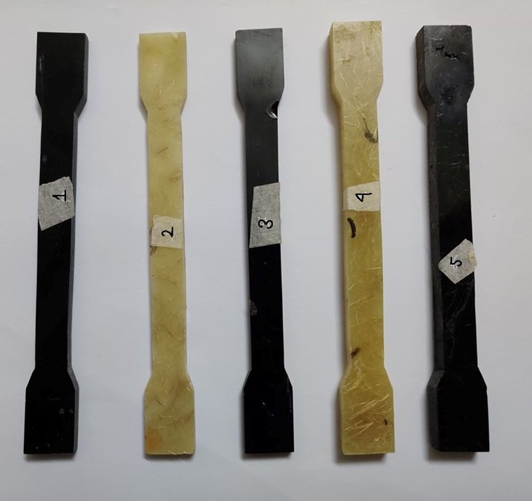
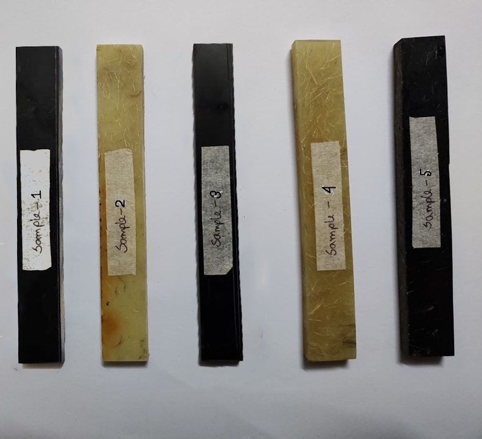
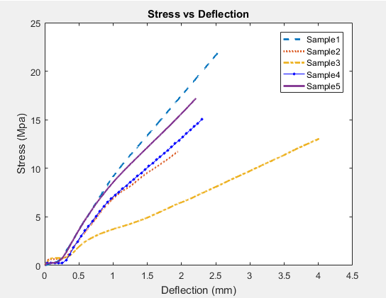
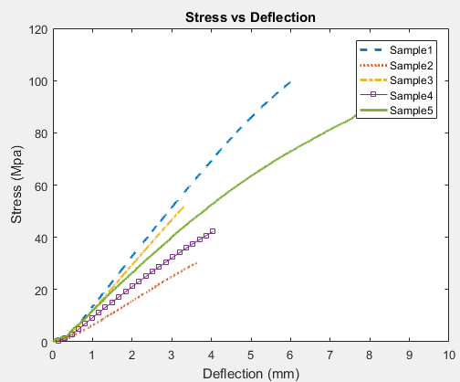

Abstract—Natural fiber-reinforced composites, at present, are having a significant role to meet the challenge of developing materials of high strength to weight ratio for the application in the field of automotive and aerospace. In this research, the effect of carbon nanotube (CNT) as filler material in banana fiber reinforced polymer has been studied by incorporating carbon nanotube and banana fiber with epoxy resin in different weight ratios. The materials were prepared by the hand layup process. Two cases were considered for the study where the sum of weight percentage of fiber and filler in the composite were kept 8% for the first case and 16% for the second one. The experimental results showed remarkable improvement in the tensile and flexural properties of the composite due to the addition of carbon nanotubes. The tensile strength increased by 11.33% for the addition of 1.5% of CNT in the first case and 13.29% for the addition of 2.5% of CNT in the second case. On the other hand, flexural strength increased by 71.5% and 123% respectively for adding CNT of stated weight percentage
The specimens were prepared according to ASTM D-638 for tensile test and ASTM D-790 for flexural test
  